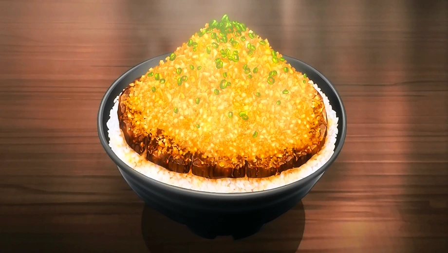

Chaliapin Steak Don

Description
The dish is exclusively made by Sōma combined with the Japanese original dish, the Chaliapin Steak, and
the
donburi concept for his first Shokugeki. Although the dish was made with cheap ingredients that can be
found in
a supermarket, the meal focused on both innovation and balance of the ingredients to fulfill the donburi
mantra,
"Dons are completed in one bowl."
Ingredients
- 2 beef sirloin steaks
- 1 and 1/2 onions
- 2 bowls of rice
- 1 tbsp pickled-plu paste
- Potato starch
- 4 tbsp red wine
- 1 tbsp soy sauce
- 2 tbsp butter
- Chopped green onions
Steps
- Mince the onions. Trim the fat off the steak and using a meat tenderizer, tenderize the steaks
well. Afterwards, cover the steaks with the minced onion all over the surface and let the onions sit
on the steaks for 30 minutes. Then remove the onions (do NOT throw them away) and season the steaks
with salt and pepper.
- Melt 1 tbsp of butter in a skillet and saute the minced onions. Season with salt and pepper, and
then move them to a plate.
- Melt the remaining butter in a frying pan and cook the steaks until they are brown on both sides and
transfer to a plate.
- Now make the sauce by adding red wine to the same skillet and mix it with the meat juices from the
previous step. Once it has reduced, add the minced onions and saute them once more. Add soy sauce
and use potato starch as needed to thicken the sauce.
- Mix the pickled-plum paste with the cooked rice and divide them into two bowls. Place the steaks
into each bowl and pour the sauce over each steak. Garnish with chopped green onions, and you’re
done!